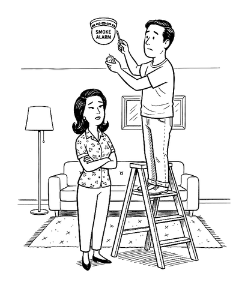
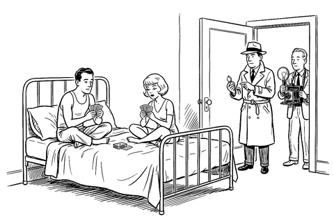
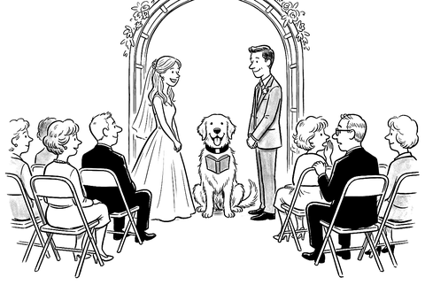

You already have a prenup.
Your state wrote it.

The Marriage Contract, 2027. The prenup you sign when you don’t sign a prenup.
How much of the money each state leaves to the judge
0 to 1920 to 3940 to 5960 to 7980 to 100
The Luck of the Draw Index: 0 is a contract you can read, 100 mostly says “ask the judge.”
If you’re married, you have a prenup. Your state wrote it. It runs to a few thousand pages of statutes and court decisions, it decides who owns your paycheck, who owes your spouse’s hospital bill, and who inherits, and it changes when you move. You agreed to all of it by signing a one-page license. Nobody handed you the rest.
This book is the rest, read to you clause by clause. Every term appears twice: once as a lawyer would have drafted it if anyone ever had, and once in English. Words that look like this mark the places where the contract gives no answer and leaves the question to a judge you’ve never met.
Every term appears twice
As a lawyer would have drafted it
Whatever either Spouse acquires from the date of marriage to the state’s cutoff, which may be separation, filing, or decree, is marital property, whoever holds title. At dissolution the court divides it in the shares it deems equitable. In most states it disregards marital misconduct. It weighs the length of the marriage; each Spouse’s age, health, income, and employability; each Spouse’s contributions, homemaking included; and any other factor it deems relevant.Article 3, the default contract
In English
In nine states, now. Elsewhere, at a divorce. From the wedding until you split, whatever either of you earns counts as shared, whoever’s name is on the account. In nine states it’s half each from the start, though only three must split it evenly. In the rest, a judge decides what’s fair, and you hope for the best.Article 3, the term sheet
Ten terms in it that surprise almost everyone
- Your spouse doesn’t own your paycheck, until someone files
- Moving changes your contract
- Lawmakers can change the terms, and the change reaches you
- Your spouse’s hospital bill may land on you
- A joint tax return puts you on the hook for every dollar
- A beneficiary form overrides both your will and your divorce decree
- No prenup can give up 401(k) rights
- Put an inheritance in a joint account and it probably stops being yours
- Your will can leave your children nothing, but your spouse can still claim a share
- The biggest terms come down to one person’s opinion
That’s Chapter 34. The other thirty-five explain where each of those came from and what you can do about it.

“So you’ve been thinking about burning the house down.”“The court has carefully weighed all eleven statutory factors.”
“We’re a little early. Should we come back and be shocked at nine?”
“By the powers vested in me by cheap-officiant-certs.com, I now pronounce you man and wife.”“Members enjoy priority boarding at the emergency room.”“Over here, it all goes on one list.”“… in sickness and in health…” “Could you repeat that last part? For our records.”“And to my beloved wife, I leave… whatever the statute was going to give her anyway.”Should you buy it?
Probably, if
- You’re married and curious what you signed up for. It’s written mainly for you, and it isn’t too late to change the money terms.
- You’re about to be. The default might already be what you want, which saves a legal fee and an awkward dinner.
- Someone has handed you a prenup. Every chapter compares the default with the common alternatives, which shows what signing would cost you.
- You’re on your way out, and want to know what a judge could do before you pay two lawyers to argue about it.
- You want to hand it to someone. “Did you know we already have a prenup? Want to read it?” is easier to say than “I think we need a prenup.”
Probably not, if
- You need advice about your own case this month. Hire a lawyer licensed in your state. The book will make that meeting shorter. It isn’t a substitute for it.
- You want to be talked into a prenup, or talked out of one. The book doesn’t argue for either. If you read it and keep the default, that’s a fine outcome.
- You want a lawyer’s book. The author is an economist. No lawyer reviewed it. Every claim has a source in the notes, and sources that weren’t checked against the original say so.
- You want your state’s rules in print. The book is the general edition. The state detail is on this site, one page per state.
In Kindle and paperback.
What’s free here, whether or not you buy it
Six short essays, drawn from the book
- Read your marriage contract this weekendTen jobs, easiest first.
- Go look at the formA beneficiary form from years ago can beat your will and your divorce decree.
- Your name on the account doesn’t make it yoursFour questions that catch most people, and the ordinary sentences that turn “mine” into “ours.”
- Three questions before you sign a prenupIf someone has handed you a draft, read these three things first.
- Get the cheapest divorce that fitsThere are at least seven ways to get divorced.
- Let a chatbot read your contract. Don’t let it write one.What a chatbot is good for here, where it goes wrong, and three prompts to start with.
The contracts, the states, and the rest
- Where to turnIf you aren’t safe, if you need legal help, and the government sources worth knowing.
- The contractsThe whole default contract in one place, and three designed alternatives: one generous, one built to have no surprises, one that puts the children first. These are web versions, in different words from the book. Copy them as plain text, paste them into a chatbot, or mark them up for a lawyer.
- Your stateOne page per state, in the book’s order. Click the map.
- The Luck of the Draw IndexEvery state gets a score out of 100 for how much of the money it leaves to the judge, with the statute behind each part.
- Reading it togetherA one-page worksheet for going through the contract with your spouse, article by article.
- Three versions of each termThe default, the Generous Contract, and the No-Surprises Contract side by side, for each of you to rank and then compare.
- ArticlesA new one each week, each answering one question about the contract, with its sources.
- CartoonsEvery cartoon in the book.
- CorrectionsThe law changes and books have mistakes. Both are logged here.
- A way to write to meAnonymously if you like.
What’s in the book
Thirty-six chapters in ten parts. Each has the Clause twice, a handful of real cases where the contract did something at least one person didn’t see coming, some law that sounds made up and isn’t, and the behavioral economics of why careful people treat this contract as they do. The economics is in boxes you can skip.
You Already Signed
- The Contract You Didn’t Read
- Why Nobody Reads It
- Luck of the Draw
- Who Wrote This Thing?
- Getting In, and Whether You’re In at All
Terms That Apply to Every Marriage
- The Perks
- Money While You’re Married
- Your Spouse’s Debts, and Your Spouse’s Tax Return
- If You Die Married
- The Form That Beats Your Will
The Property Clauses
- Whose Is It?
- How “Mine” Becomes “Ours”
- Businesses, Degrees, Stock Options, and Bitcoin
- The Division Clause: “As the Court Deems Just”
The Support Clauses
- Alimony: Whether, How Much, How Long
- Fault, Adultery, and Lifestyle Clauses
Terms You Can’t Negotiate
- The Kids
- Embryos, Pets, and Rings
Other Contracts, and None
- God’s Contract and the State’s
- No Ring, No Contract
- Round Two: Second Marriages and Blended Families
Crossing Lines
- Moving States
- Leaving the Country
- How Everyone Else Does It
How It Actually Gets Enforced
- Bargaining in the Shadow of the Law
- Your Brain in a Divorce
- Hiding, Spending, Finding
- What It Costs
Amending Your Contract
- Prenups and Postnups: What Makes Them Stick
- What People Actually Put in Them
- Three Contracts You Could Sign Instead
- How to Raise It
- Where the Contract Is Heading
The Part of Tens
- Ten Terms That Surprise Almost Everyone
- Ten Worst Arguments Ever Made in Divorce Court
- Ten Things to Do This Weekend
This book is looking for reviewers.
Free copies may be available. A review isn’t required to get one, and nothing about what you write is up to me.
Ask for a copyHow it was made
My training is in behavioral economics, and I’m not a lawyer. I’ve been married once, and our arrangements seem fine. What bothered me was finding out I’d agreed to a contract I couldn’t read, and then finding no book that would read it to me.
The book was drafted with a lot of help from an AI system, under my direction. No lawyer has reviewed it. The details are in its last appendix and at aporia.institute/ai.
2027 edition, in Kindle and paperback.